redis03
第一天
第一节(redis常用命令)
数组和链表的选择
Java List ： 数组ArrayList 优点:访问快 缺点:存储慢
链表LinkedList 优点:访问慢 缺点:存储快
为什么redis选取了链表？
Redis操作中，最多的操作是进行元素的增删
使用环境：①做大数据集合的增删
②任务队列
list
赋值：
lpush key values[value1 value2…]：从左边一个个添加元素
rpush key values[value1、value2…]：在该list的尾部添加元素。
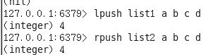
取值：
lrange key start end**：获取链表中从start到end的元素的值，start、end从0开始计数；也可为负数，若为-1则表示链表尾部的元素，-2则表示倒数第二个，依次类推…
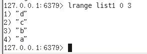
删值：
lpop key**：返回并弹出指定的key关联的链表中的第一个元素，即头部元素。如果该key不存在，返回nil；若key存在，则返回链表的头部元素。
rpop key：从尾部弹出元素。
扩展：
1 llen key：返回指定的key关联的链表中的元素的数量。
2 rpoplpush resource destination：将链表中的尾部元素弹出并添加到头部。[循环操作]
3 这种删除方法效率低,需要索引多次
lrem list3 0 a
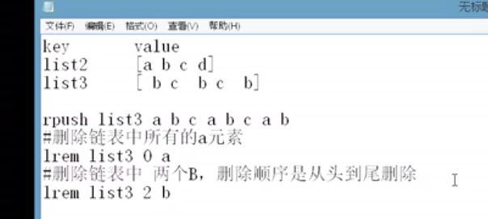
4.通过索引修改list
lset list1 2 aaa
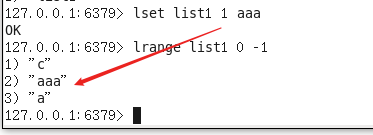
5.通知值插入
linsert list1 before aaa ccc
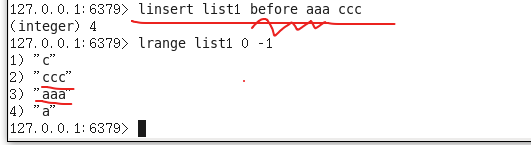
6.把list1的元素右弹出 插入到左list2中去
rpoplpush list1 list2
rpoplpush list1 list1 循环队列
Set命令
Redis操作中，涉及到两个大数据集合的并集，交集，差集运算。
赋值：
- sadd key values[value1、value2…]：向set中添加数据，如果该key的值已有则不会重复添
- 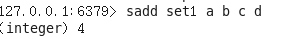
取值：
smembers key：获取set中所有的成员
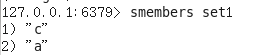
sismember key member：判断参数中指定的成员是否在该set中，1表示存在，0表示不存在或者该key本身就不存在。（无论集合中有多少元素都可以极速的返回结果）
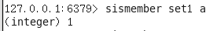
删值：
srem key members[member1、member2…]**：删除set中指定的成员
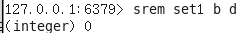
交并集 差集
差集运算：
- sdiff key1 key2…：返回key1与key2中相差的成员，而且与key的顺序有关。即返回差集。
（属于A并且不属于B的元素构成的集合）
交集运算：
- **sinter key1 key2 key3…**：**返回交集**。
（属于A且属于B的元素构成的集合）
并集运算：
- **sunion key1 key2 key3…**：**返回并集**。
- 扩展集合
查看set的数量
scard set1
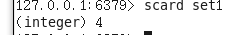
随机查看set中的元素
srandmember set1
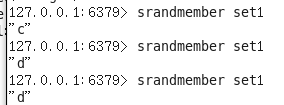
把set1 set2 的并集存储
sunionstore set3 set1 set2
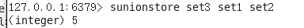
有序set集合
有序set集合，专门用来做排行榜
赋值：
- zadd key score member score2 member2 … ：将所有成员以及该成员的分数存放到sorted-set中。如果该元素已经存在则会用新的分数替换原有的分数。返回值是新加入到集合中的元素个数，不包含之前已经存在的元素。
查看：
zscore key member：返回指定成员的分数
zrange key start end [withscores]：获取集合中脚标为start-end的成员，[withscores]参数表明返回的成员包含其分数。（分数由小到大排列）
zrevrange key start end [withscores]：获取集合中脚标为start-end的成员，[withscores]参数表明返回的成员包含其分数。（分数由大到小排列）
删值：
zrem key member[member…]：移除集合中指定的成员，可以指定多个成员。
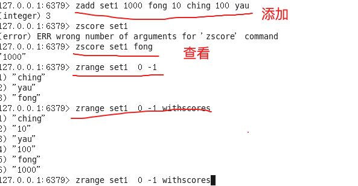
陌生:
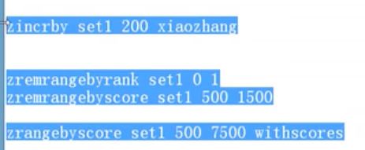
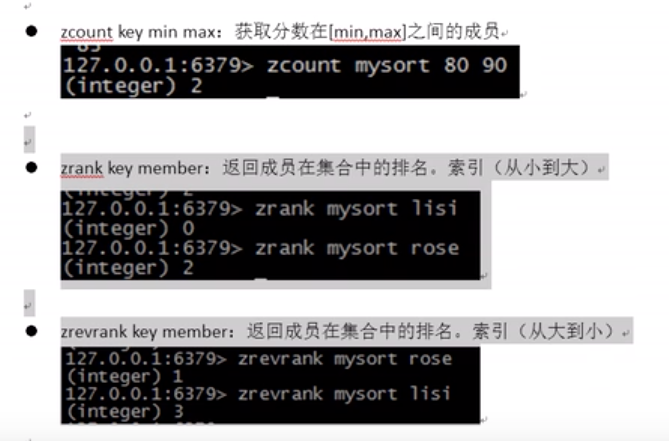
五中数据类型的通用操作(string hash list set zset)
- keys pattern：获取所有与pattern匹配的key，返回所有与该key匹配的keys。
通配符： *表示任意0个或多个任意字符，?表示任意一个字符
keys * 查询所有的key
del key1 key2…：删除指定的key
exists key：判断该key是否存在，1代表存在，0代表不存在
type key：返回的字符串为string、list、set、hash和zset，如果key不存在返回none。
设置key有效/过期
expire key ：设置key的生存时间，单位：秒如果某个key过期，redis会将其删除
ttl key：获取该key所剩的超时时间，如果没有设置超时，返回-1。如果返回-2表示超时不存在。
消息的订阅(监听)与发布
订阅新闻，新闻发布
subscribe channel：订阅频道，例：subscribe mychat，
psubscribe channel：批量订阅频道，例：psubscribe s，订阅以”s”开头的频道
publish channel content：在指定的频道中发布消息，如 publish mychat ‘today is a newday’
16个数据库
MySQL-数据库可以自己用语句自定义创建
create database xxxx;
redis-也是有数据库的。 Redis已经提前创建好了。
Redis默认有16个数据库。0，1，2…….15
在redis上所做的所有数据操作，都是默认在0号数据库上操作
数据库和数据库之间，不能共享键值对。
切换数据库：
select 数据库名;
把某个键值对进行数据库移植：
move newkey 1：将当前库的key移植到1号库中
慎用
清空当前数据库：flushdb
和redis服务器数据的清空：flushall
事务
MySQL-事务：数据完整性，安全。
Redis-事务： 进行redis语句的批量化执行
multi：开启事务用于标记事务的开始，其后执行的命令都将被存入命令队列，直到执行EXEC时，这些命令才会被原子的执行，：begin transaction
exec：提交事务，：commit 执行批量化
discard：事务回滚，：rollback 不执行批量化操作
扩展知识
quit 退出客户端
ctrl+c
dbsize 返回当前数据库中key 的数目
info 查看redis数据
ping 会返回pong则连通server
RDB
1.
持久化：把数据保存在硬盘上—–.MySQl硬盘上操作断电.—–硬盘上的数据还是存在。
非关系型数据库redis：在内存中进行操作。
断电以后，redis的部分数据会丢失，丢失的数据是保存在内存中的数据。
2.
Redis有两种持久化策略：
RDB:是redis的默认持久化机制。
RDB相当于照快照。保存的是一种状态。20G数据—-几kb快照
优点：①快照保存数据速度极快，还原数据速度极快②适用于灾难备份
缺点：①小内存机器不适合使用。
RDB机制符合要求就会照快照。（随时随地启动），会占用一部分系统资源（突然的）,很可能内存不足直接宕机。（宕机后，服务器会关闭，非正常关闭）
① 服务器正常关闭时 照快照
② Key满足一定条件，照快照
适用于：内存比较充裕的计算机。
RDB何时进行照快照：
①服务器正常关闭时，会照一次快照 ./bin/redis-cli shutdown
②key满足一定条件，会照一次快照
- λ save 900 1 #每900秒(15分钟)至少有1个key发生变化，则dump内存快照。
- λ save 300 10 #每300秒(5分钟)至少有10个key发生变化，则dump内存快照
- λ save 60 10000 #每60秒(1分钟)至少有10000个key发生变化，则dump内存快照AOf(日志备份)
AOF: 使用日志功能保存数据操作。默认AOF机制关闭的。
每秒同步（默认）：每秒进行一次AOF保存数据。 安全性低，比较节省系统资源
每修改同步：只要有key变化语句，就进行AOF保存数据。比较安全，但是极为浪费效率
不同步：不进行任何持久化操作 不安全
AOF操作：
只会保存导致key变化的语句
AOF配置：
always #每次有数据修改发生时都会写入AOF文件
everysec #每秒钟同步一次，该策略为AOF的缺省策略
no #从不同步。高效但是数据不会被持久化
优点：①持续性占用极少量的内存资源
缺点：①日志文件会特别大，不适用于灾难恢复
②恢复效率远远低于RDB
适用于：内存比较小的计算机第二节()
shutdown出现error
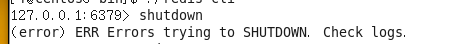
解决:
https://blog.csdn.net/github_33809414/article/details/82531642
找到redis.conf (/usr/local/redis/redis.conf)
vim redis.conf
找到logfile dir./ 两处地方
分别加入redis.log redis_dbfile/
权限全改成777
注意!!!
安装目录的redis目录页需要改
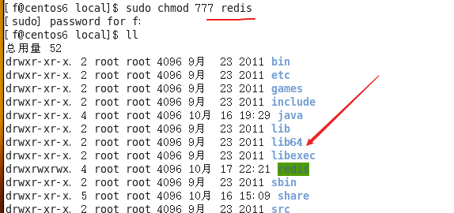
d